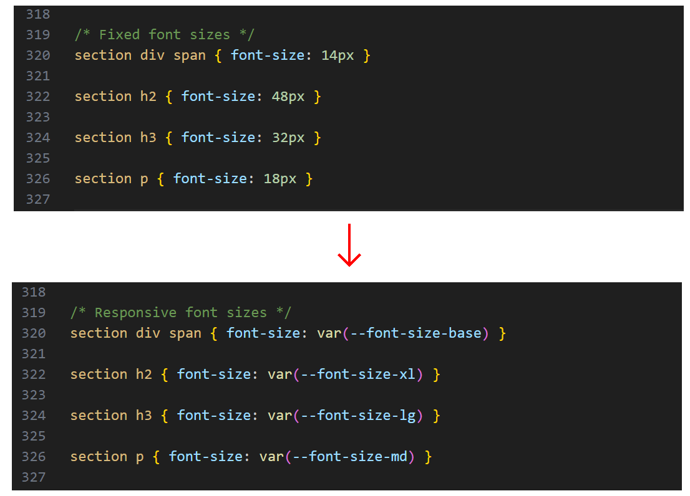
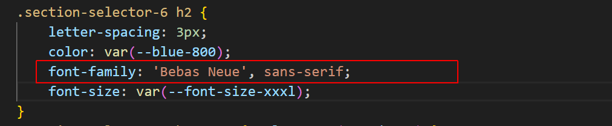

Learning Goals
At the end of this Tutorial, you will be able to:
- Understand the concept of fluid typography in web design.
- Apply a fluid typographic scale to the CSS styles to control the headings, paragraphs and other text elements in a web page.
About fluid typography
Fluid typography means that the font sizes of text – headings, paragraphs, bulleted lists, menu items – on a web page ‘scale’ (shrink or expand) smoothly according to the width of the user’s device viewport.
Here are some examples of web pages that did not use fluid typography to scale font sizes correctly for mobile phone screens.

The animated gif below is taken from an article on the CSS Tricks website that features the widely-used implementation of the fluid typography approach developed by Australian web designer Mike Riethmuller.

The modern approach is to use the CSS clamp property and include the range preset values as custom properties in your stylesheets.
You can then include the preset values as custom properties in your stylesheets. See the example below.
Add custom preperties for fluid type sizes
Follow these steps.
- Go to the Fluid Type Scale Calculator website.
- Copy the preset font scale at the right of the screen.
- In VS Code, open your style-10.css stylesheet and paste in the copied responsive type scale.

- Scroll to the part of the stylesheet that contains the fixed font sizes and update it as follows.  The values will display nicely for most cases.
- For the .section-selector-1 block, add this new style rule.
- For the .section-selector-4 block, add this new style rule.

- For the .section-selector-6 block, add this new style rule. 
When finished, save your stylesheet and display the web page at different screen sizes.
Uploading your files to GitHub
After finishing your web pages and stylesheets, you are now ready to upload them to your account on GitHub.
- Open a new tab in your web browser and go to GitHub.com. If you are not already signed in to your GitHub account, sign in now.

- On your GitHub home page, click the ‘repo’ that holds your web pages. Its name will look as follows, where username is your chosen username on GitHub.
username.github.io

- On the next GitHub screen displayed, near the right of the screen, you can see a button named Add file. Click on it.

- From the dropdown list displayed, choose the option Upload files.

- In File Explorer (Windows) or Finder (Apple Mac), drag-and-drop your index.html file and your 📁 assets and 📁 exercises sub-folders to upload them to your repository on GitHub.

- Scroll down to the bottom of the GitHub screen, and accept or edit the short message (Add files via upload) in the Commit changes box.
- Finally, click the green Commit changes button to upload your files.

Your updated sample web page is now published on GitHub at a web address similar to the following:
https://username.github.io/exercises/page-10.html
It may take a few minutes for your upload files to appear on GitHub.